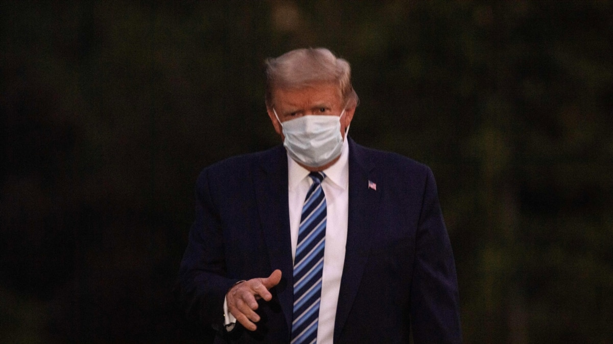

NYT: Трамп перенес коронавирус тяжелее, чем сообщалось ранее

Президент Дональд Трамп в октябре перенес заболевание коронавирусом тяжелее, чем публично признавалось в то время, утверждает газета New York Times.
Ссылаясь на четыре неназванных источника, знакомых с состоянием экс-президента, газета пишет, что у Трампа в какой-то момент был сильно понижен уровень кислорода в крови и возникла проблема с легкими, связанная с пневмонией, вызванной коронавирусом.
По словам газеты, до госпитализации прогноз стал настолько тревожным, что официальные лица считали, что Трампу потребуется аппарат искусственной вентиляции легких.
Как рассказали знакомые с ситуацией источники, у Трампа были обнаружены инфильтраты в легких, которые возникают, когда легкие воспалены и содержат такие вещества, как жидкость или бактерии, отмечает New York Times.
Присутствие инфильтратов, особенно в сочетании с другими симптомами, может быть признаком острой формы заболевания.Их можно легко обнаружить на рентгеновском снимке или МРТ, когда части легких кажутся непрозрачными или белыми.
Острое беспокойство вызывал и уровень кислорода в крови Трампа, опустившийся ниже 90, пишет New York Times.Заболевание считается тяжелым, когда уровень сатурации падает до 90 с небольшим.
По словам газеты, экс-президент не хотел, чтобы его перевозили из Белого дома в Национальный военно-медицинский центр имени Уолтера Рида, и согласился на госпитализацию лишь после того, как помощники сказали ему, что в противном случае Секретная служба будет вынуждена нести его на руках, если ему станет хуже.
Posted On: 2021-02-12T08:29:00
Posted By: Служба новостей «Голоса Америки»
Content Date: 2021-02-12
Download Date: 2021-06-20
Document ID: L0C04D2J1